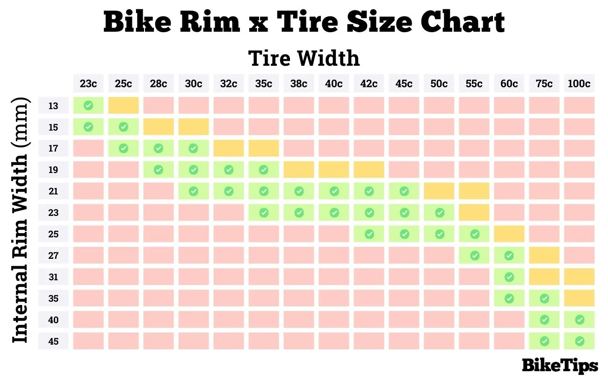

Bike Parts - David
Consumables
Tyres - Schwalbe Marathon 28mm 28-622 28x1.10 700x28C
Tubes - Schwalbe 700C SV17 Presta valve, 28", 40 mm
Galaxus
Brake Pads Front - Shimano M70R2
Galaxus
Brake pads rear - Avid 20 R Performance Standard
Galaxus
Tools
Tyre Levers - Lezyne Power Lever XL
Galaxus
Pump - Topeak Joe Blow Sprint
Galaxus
Tyre Patch Kit - Hama
Galaxus
Additional Parts
Mudguards - SKS Bluemels Basic 28″ 35 Set (35 is mudguard width, suitable up to 28mm tyre. Other widths available)
Handlebar Grips - Lizard Skins Single Lock-on Mac Askill 29.5mm x 136mm
Galaxus
Bell - Knog Oi Small
Galaxus
Bike Parts - Noelia
Consumables
Tyres - Schwalbe Marathon 47-622
Galaxus
Additional Parts
Handlebar Grips - Ergon GA2 Single Twist Shift
Galaxus
Random Info
Tyre Widths
This is based on the internal rim width i.e. gap between lips 